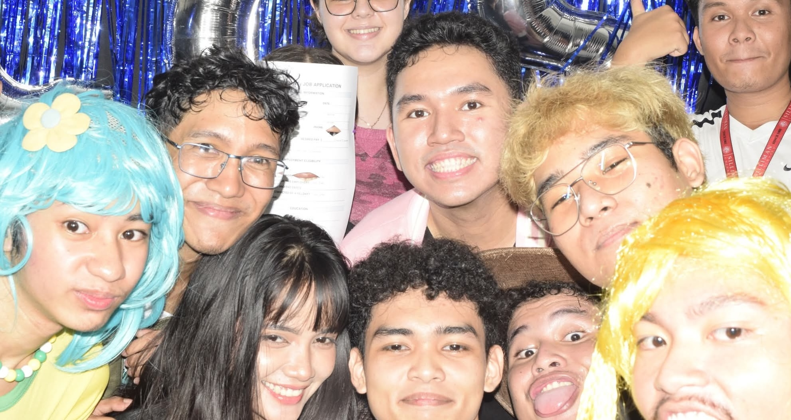
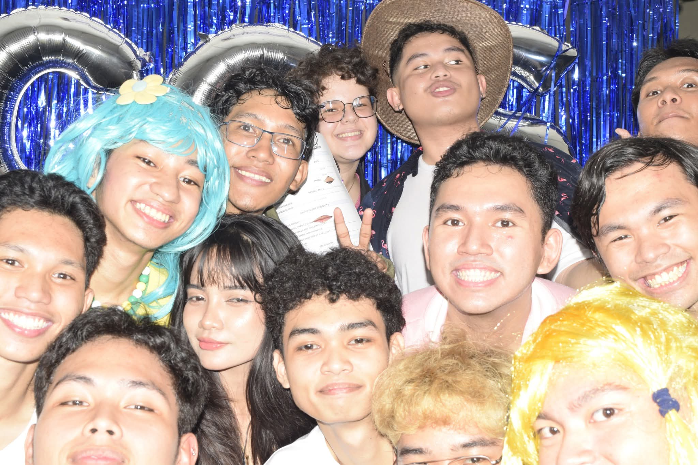
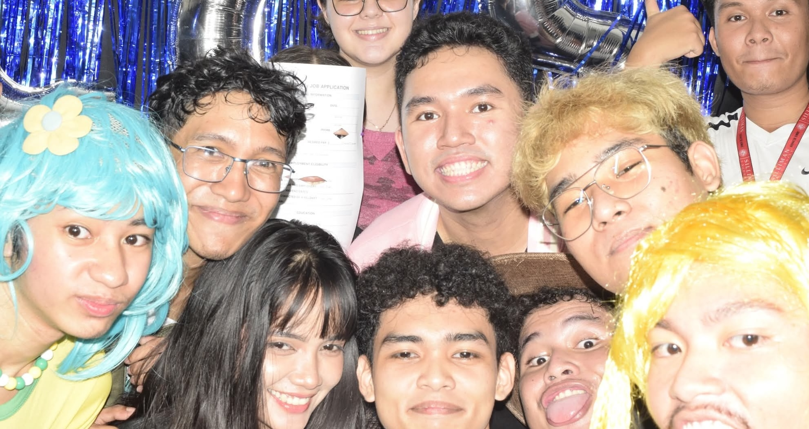
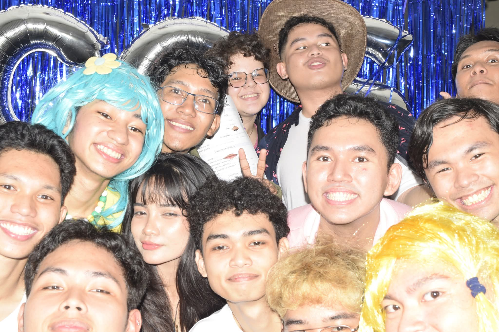

CCS: Acquaintance Party
On Saturday, August 2, 2025, from 6:00 PM to 9:00 PM, I was part of the working committee for the College of Computer Studies acquaintance party, ehld at Silliman University High School Department. The goal of the session was to make the event successful despite the limited preparation time we had. As the first year CS representative and a member of the secretariat, I was given the responsibility for finding a host and recruiting participants who were willing to perform on stage. It was my first official event under my department, I was so determined to help make the event a success.
I learned how to communicate more effectively and how to stay organized under pressure. I expected the preparation to be easier, but soon realized how much coordination and effort are required to manage an event within a tight schedule. What surprised me most was how cooperative everyone become as the event approached. The governor during that was really quick to solve a problem, he tried his best to motivate others. Everything came together during the actual event made all the stress worth it.
This experience definitely changed how I view teamwork and time management. I realized that even with limited time and resources, great result can still be achieved through cooperation and commitment. I also learned that communication is one of the most important factor in organizing any event.
Because of this activity, I am more confident in my ability to handle responsibilities under pressure. I have become more appreciative of teamwork and the people around me who worked tirelessly to make the event successful. I wish to continue working with them in the future.